Histograms
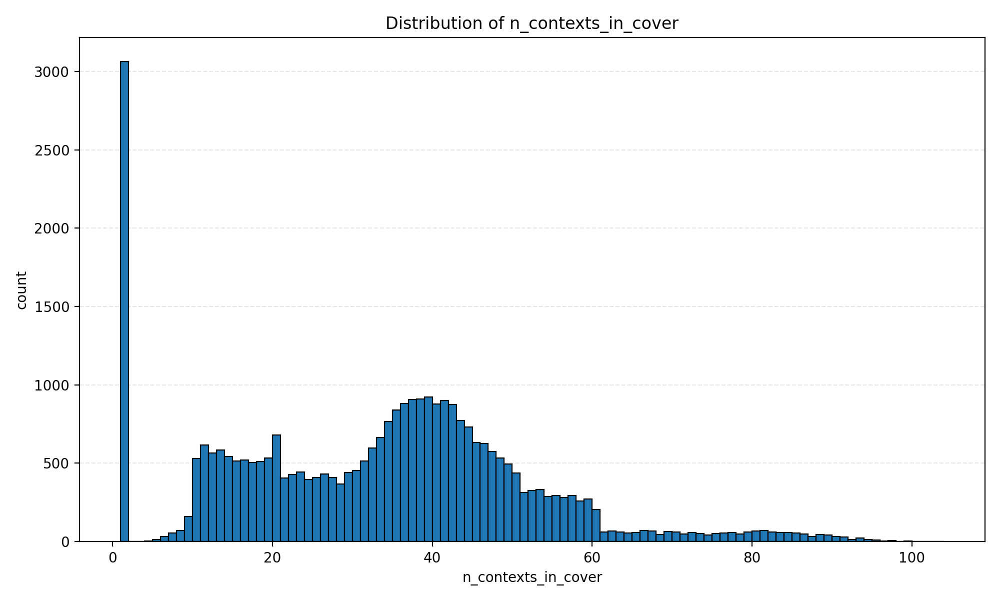
n_contexts_in_cover
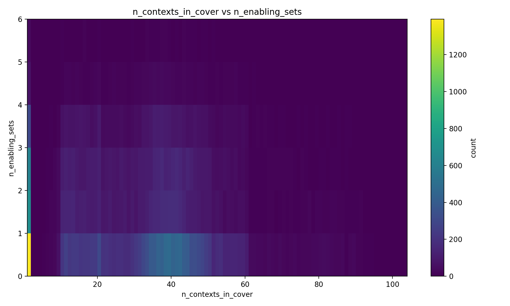
n_contexts_in_cover_vs_n_enabling_sets
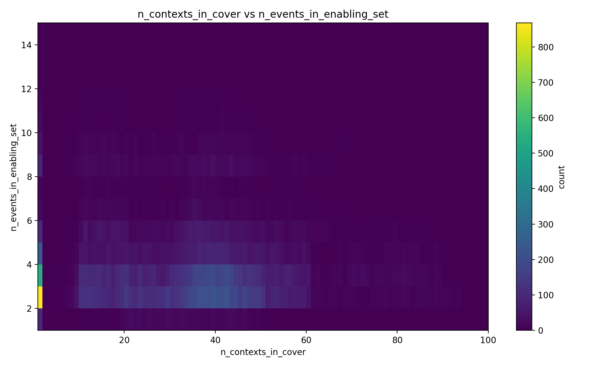
n_contexts_in_cover_vs_n_events_in_enabling_set
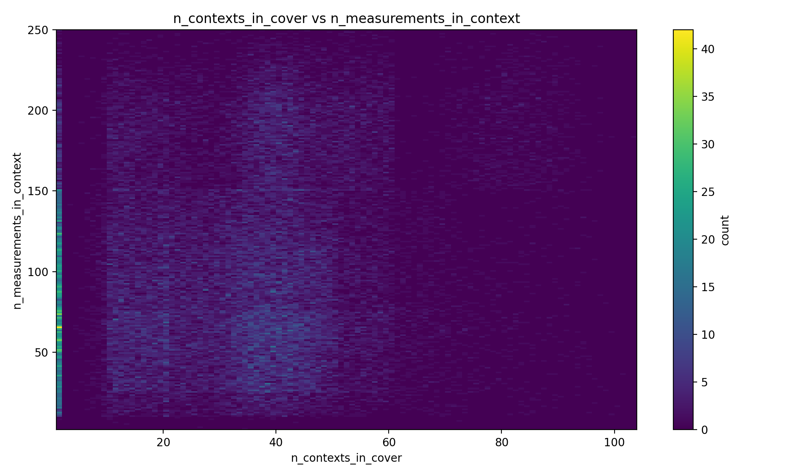
n_contexts_in_cover_vs_n_measurements_in_context
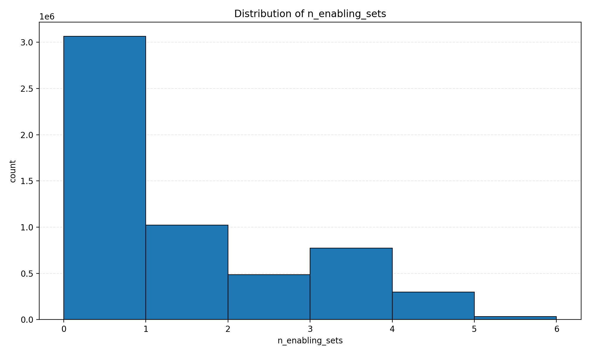
n_enabling_sets
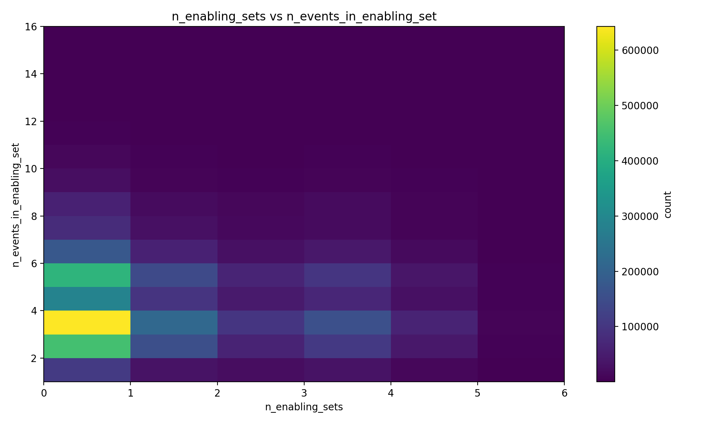
n_enabling_sets_vs_n_events_in_enabling_set
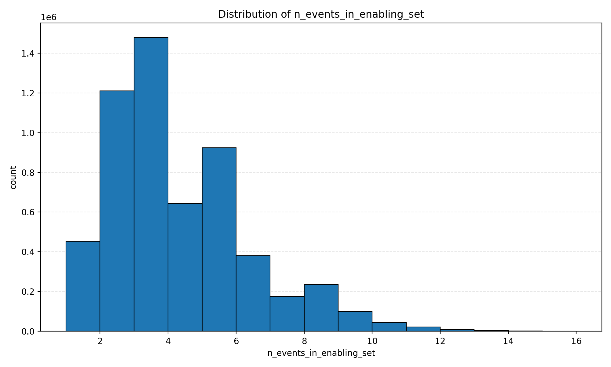
n_events_in_enabling_set
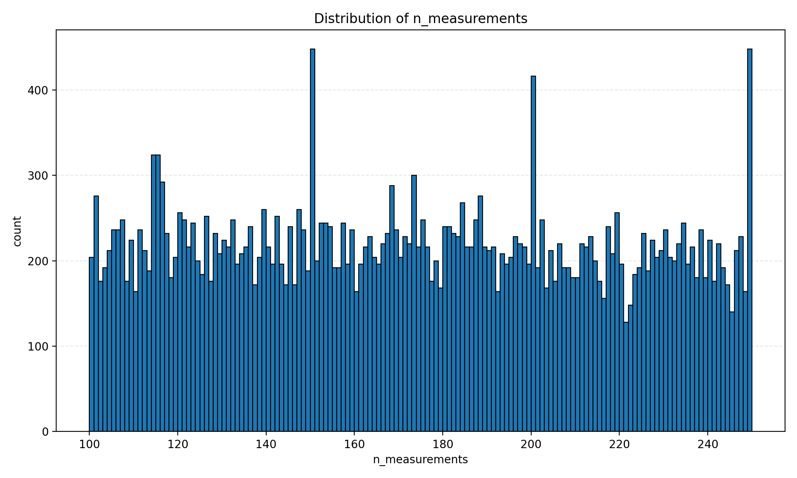
n_measurements
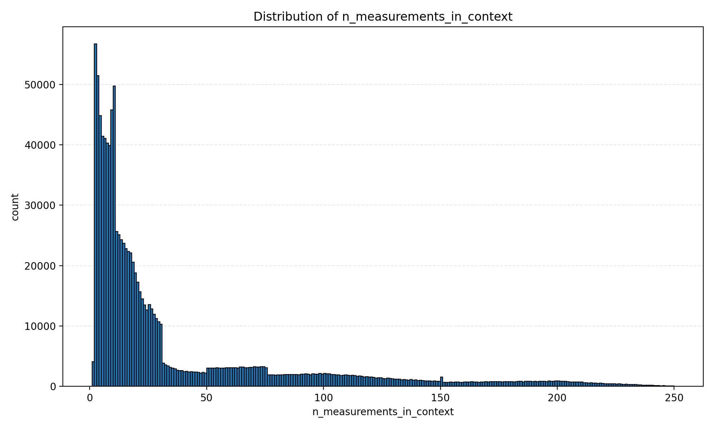
n_measurements_in_context
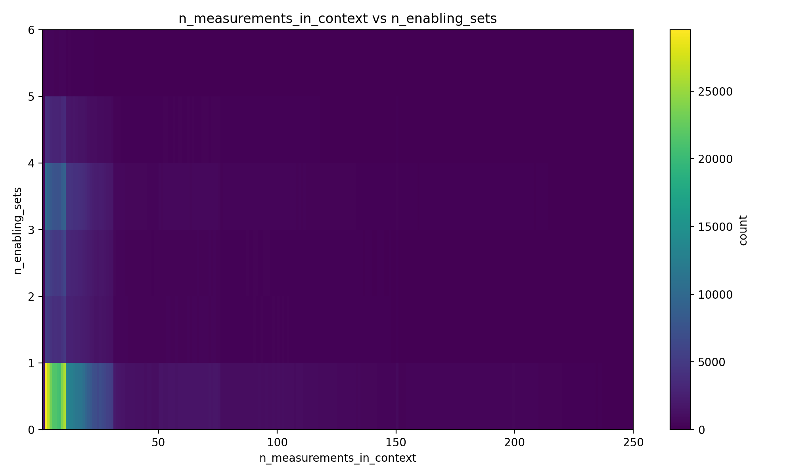
n_measurements_in_context_vs_n_enabling_sets
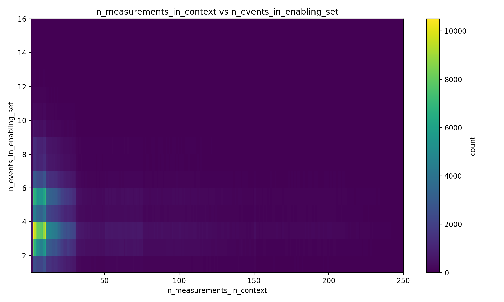
n_measurements_in_context_vs_n_events_in_enabling_set
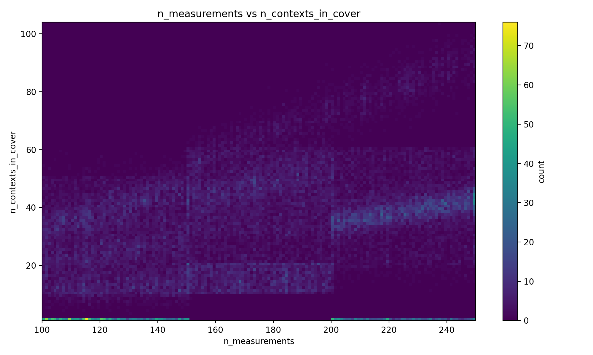
n_measurements_vs_n_contexts_in_cover
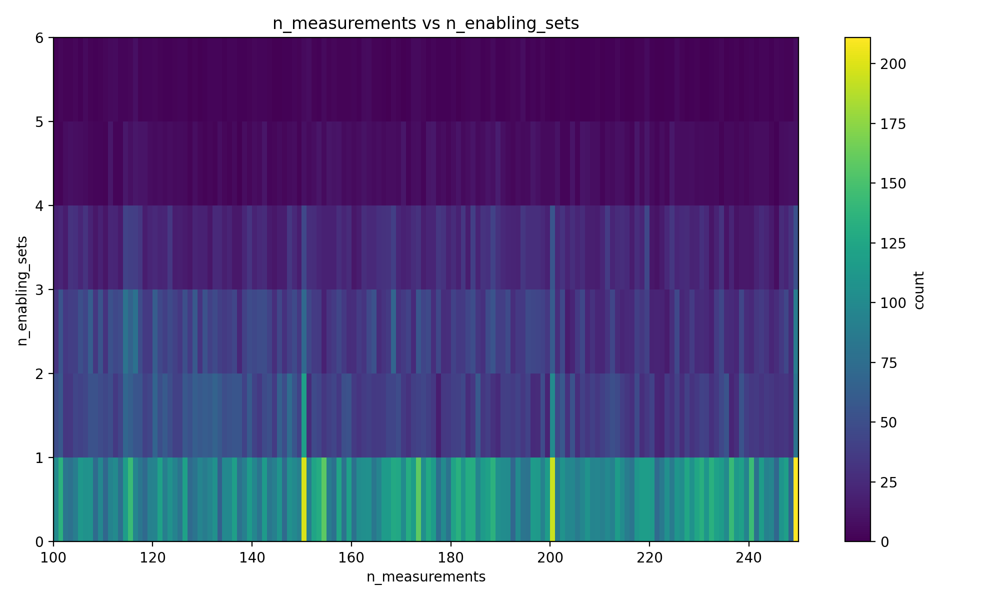
n_measurements_vs_n_enabling_sets
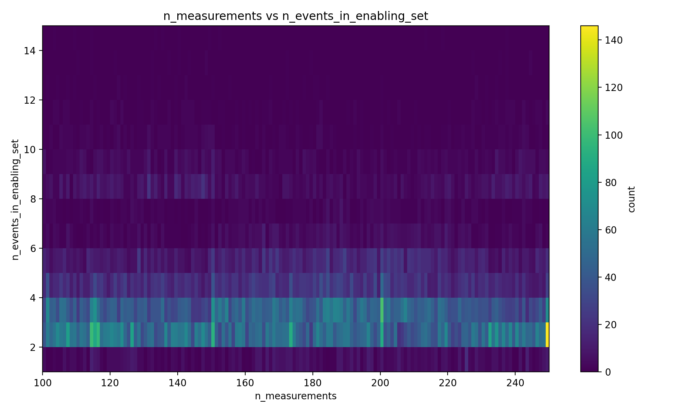
n_measurements_vs_n_events_in_enabling_set
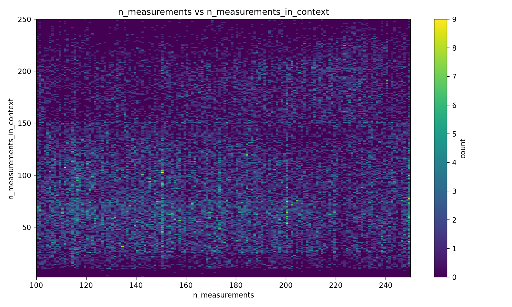
n_measurements_vs_n_measurements_in_context